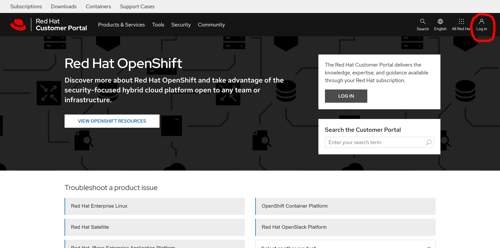
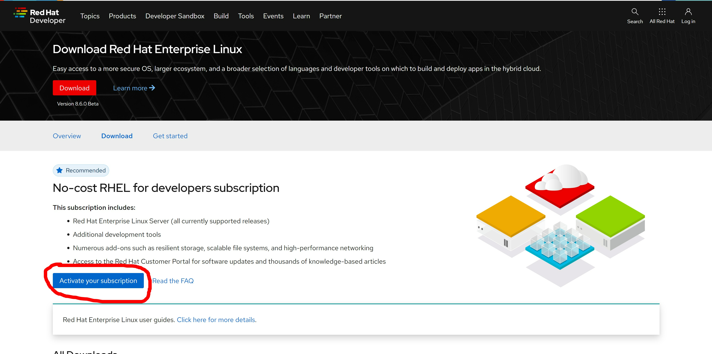
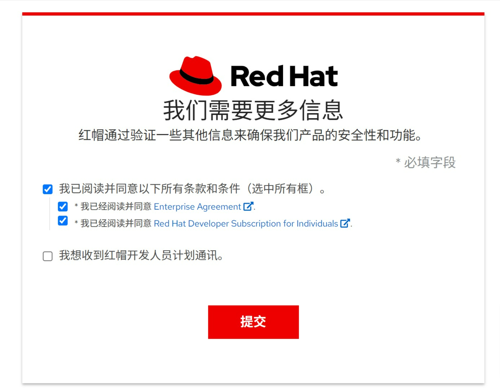
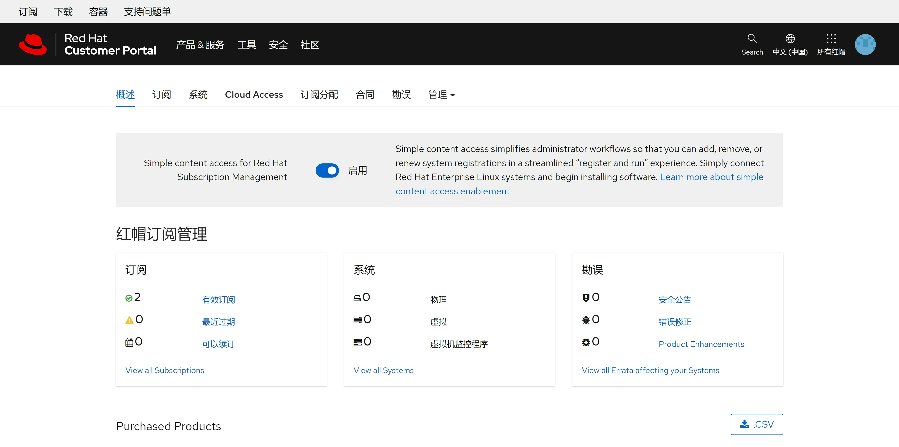
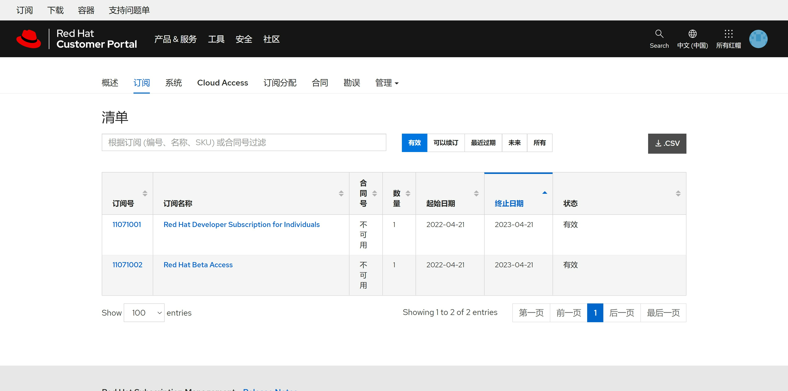
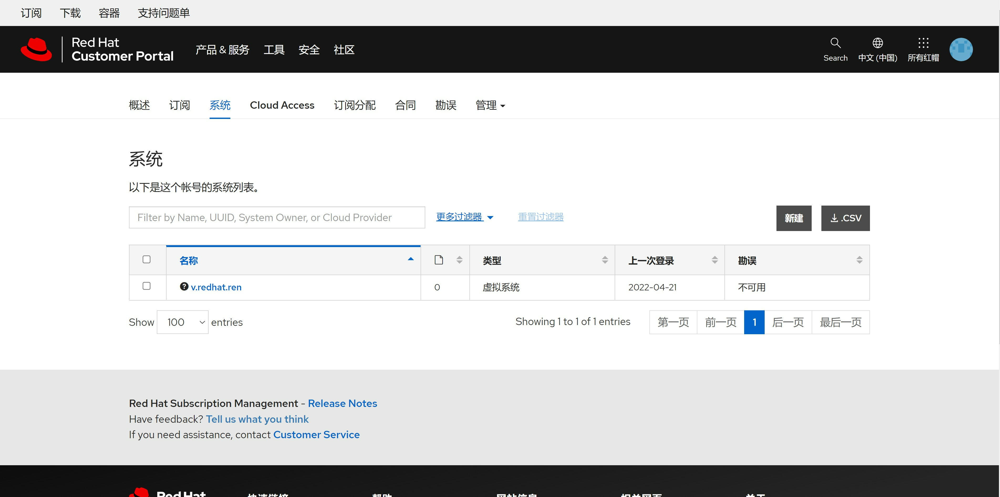
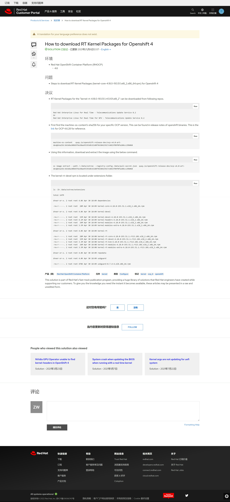

no-cost rhel subscription / 红帽免费开发者订阅
自从centos宣布停止支持后，红帽为了照顾广大的开发者群体，推出了免费的开发者订阅，可以激活16个系统，还能免费看红帽的知识库，超值，现在就把注册和激活开发者账号的流程走一遍。
注册账户和激活订阅
首先，登录 https://access.redhat.com/ 去创建一个账号

然后访问： https://developers.redhat.com/products/rhel/download


接下来，我们确认一下我们的账号是否有 developer subscription, 访问 https://access.redhat.com/management

我们能够看到，我们刚刚激活了2个subscription，其中一个就是我们要的developer subscription

激活一个系统
接下来，我们用我们的用户名，密码，来激活一个rhel系统
subscription-manager register --auto-attach --username ******** --password ********
dnf repolist
# Updating Subscription Management repositories.
# repo id repo name
# rhel-8-for-x86_64-appstream-rpms Red Hat Enterprise Linux 8 for x86_64 - AppStream (RPMs)
# rhel-8-for-x86_64-baseos-rpms Red Hat Enterprise Linux 8 for x86_64 - BaseOS (RPMs)访问 https://access.redhat.com/management/systems ， 可以看到系统已经激活

能看知识库了
访问这个知识库文章，确认自己能访问知识库啦： https://access.redhat.com/solutions/6178422

调整分区
默认rhel安装，会给一个很大的/home，但是我们做实验，最好把空间都给 / , 不然很容易出现 / 空间不足的情况，那么怎么把 /home 删掉，并且扩大 / 分区呢？
lsblk
# NAME MAJ:MIN RM SIZE RO TYPE MOUNTPOINT
# sr0 11:0 1 1024M 0 rom
# vda 252:0 0 60G 0 disk
# ├─vda1 252:1 0 1G 0 part /boot
# └─vda2 252:2 0 59G 0 part
# ├─rhel_v-root 253:0 0 38.3G 0 lvm /
# ├─rhel_v-swap 253:1 0 2.1G 0 lvm [SWAP]
# └─rhel_v-home 253:2 0 18.7G 0 lvm /home
umount /home
lvremove -f /dev/rhel_v/home
# Logical volume "home" successfully removed.
# comment out the following line to skip the /home partition
sed -i -E 's/^(.*\/home)/# \1/g' /etc/fstab
lvextend -l +100%FREE /dev/rhel_v/root
# Size of logical volume rhel_v/root changed from <38.26 GiB (9794 extents) to <56.94 GiB (14576 extents).
# Logical volume rhel_v/root successfully resized.
xfs_growfs /dev/rhel_v/root
# meta-data=/dev/mapper/rhel_v-root isize=512 agcount=4, agsize=2507264 blks
# = sectsz=512 attr=2, projid32bit=1
# = crc=1 finobt=1, sparse=1, rmapbt=0
# = reflink=1
# data = bsize=4096 blocks=10029056, imaxpct=25
# = sunit=0 swidth=0 blks
# naming =version 2 bsize=4096 ascii-ci=0, ftype=1
# log =internal log bsize=4096 blocks=4897, version=2
# = sectsz=512 sunit=0 blks, lazy-count=1
# realtime =none extsz=4096 blocks=0, rtextents=0
# data blocks changed from 10029056 to 14925824
lsblk
# NAME MAJ:MIN RM SIZE RO TYPE MOUNTPOINT
# sr0 11:0 1 1024M 0 rom
# vda 252:0 0 60G 0 disk
# ├─vda1 252:1 0 1G 0 part /boot
# └─vda2 252:2 0 59G 0 part
# ├─rhel_v-root 253:0 0 57G 0 lvm /
# └─rhel_v-swap 253:1 0 2.1G 0 lvm [SWAP]
reference
- https://developers.redhat.com/blog/2021/02/10/how-to-activate-your-no-cost-red-hat-enterprise-linux-subscription#
- https://developers.redhat.com/products/rhel/download